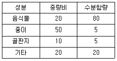
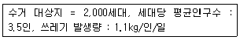
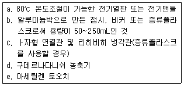
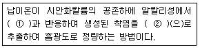
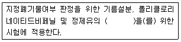
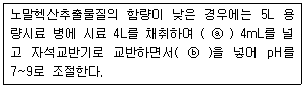

폐기물처리산업기사 (2009-03-01 기출문제)
1과목: 폐기물개론
1. 어느 도시쓰레기의 성분 중 타지 않는 성분이 중량비로 60% 차지하였다. 지금 밀도가 400kg/m3인 쓰레기가 16m3가 있을 때 타는 성분 물질의 양은?
- 1.26톤
- 2.56톤
- 3.78톤
- 4.25톤
(정답률: 알수없음)

2. 쓰레기발생량에 영향을 주는 인자에 관한 설명으로 가장 거리가 먼 것은?
- 쓰레기통이 클수록 쓰레기 발생량이 증가한다.
- 수집빈도가 높을수록 쓰레기 발생량이 증가한다.
- 생활수준이 낮을수록 쓰레기 발생량이 증가한다.
- 도시규모가 커질수록 쓰레기 발생량이 증가한다.
(정답률: 알수없음)
3. 직경이 3m인 Trmmol screen의 최적속도는?
- 31rpm
- 24rpm
- 11rpm
- 8rpm
(정답률: 알수없음)
4. 쓰레기 발생량 예측모델 중 쓰레기 발생량에 영향을 주는 모든 인자를 시간에 대한 함수로 하여 각 영향인자들간의 상관관계를 수식화는 방법은?
- 동적모사모델
- 다중회귀모델
- Trend법
- CORAP 모델
(정답률: 알수없음)
5. 파쇄기에 관한 설명으로 틀린 것은?
- 충격파쇄기는 유리나 목질류 등을 파쇄하는데 이용된다.
- 충격파쇄기는 대개 회전식이다.
- 전단파쇄기는 충격파쇄기에 비해 파쇄속도가 느리고 이물질의 혼입에 대하여 약하다.
- 압축파쇄기는 파쇄기의 마모가 심하고 비용이 많이 소요되는 단점이 있다.
(정답률: 알수없음)
6. 효과적인 수거를 위한 쓰레기 수거차량의 노선결정시 유의할 사항으로 옳지 않은 것은?
- 아주 많은 양의 쓰레기가 발생되는 발생원은 하루 중 가장 먼저 수거한다.
- 언덕지역에서는 언덕의 꼭대기에서부터 시작하여 적재하면서 차량이 아래로 진행하도록 한다.
- U자형 회전을 피한다.
- 가급적 반시계방향으로 노선을 정한다.
(정답률: 알수없음)
7. 10m2의 폐기물을 압축비 6으로 압축하였을 때 압축 후의 부피는?
- 1.24m3
- 1.67m3
- 2.33m3
- 2.53m3
(정답률: 알수없음)
8. 분뇨의 성질에 관한 설명으로 틀린 것은?
- 분과 뇨의 구성비는 대략 양적으로 1:8이다.
- 분과 뇨의 고형질의 비는 3:1이다.
- 분뇨의 비중은 1.02정도 이다.
- 분뇨 내 협잡물의 양과 질은 도시, 농촌, 공장지대 등 발생지역에 따라 그 차이가 크다.
(정답률: 알수없음)
9. 3,000명이 거주하는 지역에서 한 가구당 20리터 종량제 통부가 1주일에 2개씩 발생 되고 있다. 한 가구당 2.4명이 거주할 때 지역에서 발생 되는 쓰레기 발생량은?
- 12.6 리터/인ㆍ주
- 1.2리터/인ㆍ일
- 16.7 리터/인ㆍ주
- 1.4리터/인ㆍ일
(정답률: 알수없음)
10. 함수율이 35%인 쓰레기를 함수율 5%로 감소시키면 감소시킨 쓰레기 전체중량은 처음 중량의 몇 %가 되는가? (단, 쓰레기 비중은 1.0)
- 83.8%
- 72.2%
- 68.4%
- 66.2%
(정답률: 알수없음)
11. 어느 도시쓰레기의 조성이 탄소 48%, 수소 6.4%, 산소 37.6%, 질소 2.6%, 황 0.4% 그리고 회분 5%일 때 고위 발열량은? (단, Dulong 식물 적용할 것)
- 약 7,500 kcal/kg
- 약 6,500 kcal/kg
- 약 5,500 kcal/kg
- 약 4,500 kcal/kg
(정답률: 알수없음)
12. 폐기물의 성상조사 결과, 표와 같은 결과를 구했다. 이 폐기물의 수부 함유량(%)은? (단, 수치의 단위는 %)

- 1
- 23
- 25
- 28
(정답률: 알수없음)
13. 폐기물에 존재하는 유기와 무기 오염물질의 용출 가능성을 결정하는데 이용되는 시험법은?
- EPA
- TCLP
- CFR
- RORA
(정답률: 알수없음)
14. 밀도가 600kg/m3인 쓰레기 10톤을 압축시켜 부피를 10m3으로 만들었다면 부피감소률(Voiume Reduction,%)은?
- 40
- 5
- 50
- 55
(정답률: 알수없음)
15. 폐기물 발생량 조사방법과 가장 거리가 먼 것은?
- 적재차량 계수분석법
- 정량조사법
- 직접계근법
- 물질수지법
(정답률: 알수없음)
16. 다음 중 유해성이 있다고 판단할 수 있는 폐기물의 성질과 가장 거리가 먼 것은?
- 반응성
- 인화성
- 부식성
- 부패성
(정답률: 알수없음)
17. 광학선별은 물질이 가진 광학적 특성의 차를 이용하여 분리하는 기술이다. 다음 중 광학선별의 절차(과정) 단계에 대한 내용으로 틀린 것은?
- 조사결과는 광학적으로 평가됨
- 광학적으로 조사됨
- 입자는 기계적으로 투입됨
- 선별대상입자는 압축공기분사에 의해 정밀하게 제거됨
(정답률: 알수없음)
18. 고형분이 45%인 주방쓰레기 10톤을 소각하기 위해 함수율이 15%되도록 건조시켰다. 이 건조 쓰레기의 중량은? (단, 비중은 1.0 기준)
- 5.02톤
- 5.29톤
- 5.67톤
- 5.89톤
(정답률: 알수없음)
19. 다음은 파이프-라인을 이용한 쓰레기 수송방법에 대한 설명이다. 적합하지 않은 내용은?
- 쓰레기 발생밀도가 낮은 곳에서 현실성이 있다.
- 잘못 투입된 물건을 회수하기가 곤란하다.
- 조대 쓰레기는 파쇄, 압축 등의 전처리가 필요하다.
- 장거리에서는 이용이 곤란하다.
(정답률: 알수없음)
20. 다음과 같은 조건하에서 1주일에 2회 수거하는 지역 내의 1회 수거 쓰레기량은?

- 약 34톤
- 약 27톤
- 약 18톤
- 약 12톤
(정답률: 알수없음)
2과목: 폐기물처리기술
21. 분뇨를 혐기성 소화법으로 처리하고 있다. 정상적인 작동여부를 확인하려고 할 때 조사 항목과 거리가 먼 것은?
- 소화 가스량
- 소화가스 중 메탄과 이산화탄소 함량
- 유기산 농도
- 투입 분뇨의 비중
(정답률: 알수없음)
22. 소각을 위한 연소기 중 화격자 연소기에 관한 설명으로 틀린 것은?
- 기계적 작동으로 교반력이 강하다.
- 연속적인 소각과 배출이 가능하다.
- 체류시간이 길다.
- 국부가열이 발생할 염려가 있다.
(정답률: 알수없음)
23. 함수율 90%인 슬러지 1000m3를 함수율 20%로 처리하여 매립하였다면 매립된 슬러지의 중량은? (단, 비중은 1.0 기준0
- 100 톤
- 125 톤
- 150 톤
- 185 톤
(정답률: 알수없음)
24. 폐기물의 수분이 적고 저위발열량이 높을 때 일반적으로 적용되는 연소실 내의 연소가스와 폐기물의 흐름 형식은?
- 역류식
- 교류식
- 복류식
- 병류식
(정답률: 알수없음)
25. 분뇨처리장 설계시 적용되는 분뇨 배출량으로 가장 적절한 것은?
- 0.5ℓ/인ㆍ일
- 1.1ℓ/인ㆍ일
- 1.8ℓ/인ㆍ일
- 2.4ℓ/인ㆍ일
(정답률: 알수없음)
26. 일반적으로 탈수에 이용되지 않는 방법은?
- 부상분리
- 진공여과
- 원심분리
- 가압여과
(정답률: 알수없음)
27. 유기성 폐기물 퇴비화의 장단점에 대한 설명으로 가장 거리가 먼 것은?
- 다른 폐기물처리 기술에 비하여 고도의 기술수준이 요구되지 않는다.
- 퇴비화 과정에서 부피가 90% 이상 줄어 최종처리시 비용이 절감된다.
- 다양한 재료를 이용하므로 퇴비제품의 품질표준화가 어렵다.
- 초기비용 투자가 적으며 운영시에 요소되는 에너지도 적다.
(정답률: 알수없음)
28. 용량 1⑤m3의 매립지가 있다. 밀도 0.5/m3인 도시쓰레기가 200,000kg/일 율로 발생 된다면 매립지 사용일수는? (단, 매립지 내의 다짐에 의한 쓰레기 부피감소율은 60%이다.)
- 625일
- 725일
- 825일
- 925일
(정답률: 알수없음)
29. 매립지에 매립된 쓰레기양이 3,000ton이고 이중 유기물 함량이 40%이며, 유기물에서 가스로의 진환율이 70%이다. 만약 유기물 kg당 1m3의 가스가 생성되고 가스 중 메탄함량이 40% 라면 발생 되는 총 메탄의 부피는? (단, 표준상태로 가정)
- 224000m3
- 284000m3
- 336000m3
- 393000m3
(정답률: 알수없음)
30. 다음 중 차수막에 대한 설명으로 적당하지 않은 것은?
- 연직차수막은 지붕에 암반 및 점성토로 구성된 불투수층이 수평방향으로 넓게 분포하고 있는 경우 수직 또는 경사로 시공한다.
- 연직차수막은 지하에 매설하기 때문에 차수성 확인이 어렵다.
- 표면차수막은 원칙적으로 지하수 집배수 시설을 시공한다.
- 표면차수막은 단위면적당 공사비는 비싸지만 총 공사비로는 싸다.
(정답률: 알수없음)
31. 분뇨 저장탱크 내에 악취발생 공간 체적이 60m3이고 이를 시간당 2차례씩 교환하고자 한다. 발생 된 악취공기를 퇴비여과 방식을 채용, 투과속도 15m/hr으로 처리하고자 한다면 필요한 퇴비 여과상의 면적은?
- 8m2
- 10m2
- 12m2
- 14m2
(정답률: 알수없음)
32. 폐기물 매립지 표면적이 50,000m2이며 침출수량은 년간 강우량의 15% 라면 1년간 침출수에 의한 BOD 누출량은? (단, 년간 평균 강우량은 1,200mm, 침출수 BOD 10,000mg/ℓ이다.)
- 60000 kg
- 70000 kg
- 80000 kg
- 90000 kg
(정답률: 알수없음)
33. 분뇨 300kℓ/day를 중온 소화하였다. 1일 동안 얻어지는 열량은? (단, CH4 발열량은 6000 kcal/m3으로 발생가스는 전량 메탄으로 가정하고 발생가스량은 분뇨투입량의 8배로 한다.)
- 약 0.8×106 kcal/day
- 약 1.4×107 kcal/day
- 약 5.9×108 kcal/day
- 약 7.2×109 kcal/day
(정답률: 알수없음)
34. 연료가 완전연소시 이론공기량을 Ao, 실제공기량을 A라고 할 때 과잉공기계수 m을 구하는 식으로 옳은 것은?
- A/Ao
- Ao/A
- A-Ao
- AㆍAo
(정답률: 알수없음)
35. 유효공극율 0.2, 점토층 위의 침출수 수두 1.5m인 점토 차수층 1.0m를 통과하는데 10년이 걸렸다면 점토 차수층의 투수계수는 몇 cm/sec 인가?
- 2.54×10-8
- 2.54×10-6
- 5.54×10-8
- 5.54×10-6
(정답률: 알수없음)
36. 질소와 인을 제거하기 위한 생물학적 고도처리공법(A2O) 의 공정 중 ‘호기조’의 역할과 가장 거리가 먼 것은?
- 질산화
- 탈질화
- 유기물의 산화
- 인의 과잉섭취
(정답률: 알수없음)
37. 어느 도시에서 1일 수거되는 분뇨가 500kℓ, 수거차량의 용량은 3kℓ/대, 분뇨처리장에서 수거차량 1대의 분뇨투입시간이 30분, 분뇨처리장에서 수거차량 작업시간을 1일 8시간이라 할 때 분뇨처리장에서 수거차량의 분뇨투입을 위한 투입구 수는? (단, 기타조건은 고려하지 않음)
- 11개
- 13개
- 15개
- 17개
(정답률: 알수없음)
38. 퇴비를 효과적으로 생산하기 위하여 퇴비화 공정 중에 주입하는 Bulking Agent에 대한 설명과 가장 거리가 먼 것은?
- 처리대상물질의 수분함량을 조절한다.
- 미생물의 지속적인 공급으로 퇴비의 완술을 유도한다.
- 퇴비의 질(C/N비)개선에 영향을 준다.
- 처리대상물질 내의 공기가 원활히 유동될 수 있도록 한다.
(정답률: 알수없음)
39. 유해폐기물 고형화 처리방법인 자가시멘트법에 관한 내용으로 틀린 것은?
- 연소가스 탈황시 발생된 슬러지 처리에 사용됨
- 폐기물이 스스로 고형화되는 성질을 이용하여 개발됨
- 중금속 저지에 효과적이며 혼합률이 낮음
- 숙련된 기술과 보조에너지가 필요 없음
(정답률: 알수없음)
40. 합성차수막 중 PVC 에 관한 설명으로 틀린 것은?
- 작업이 용이하다.
- 접합이 용이하고 가격이 저렴하다.
- 자외선, 오존, 기후에 강하다.
- 대부분의 유기화학물질에 약하다.
(정답률: 알수없음)
3과목: 폐기물 공정시험 기준(방법)
41. 흡광광도법에서 사용되는 흡수셀에 관한 설명으로 근적외부 파장범위에 주로 사용되는 재질은?
- 석영
- 고무
- 금속
- 플라스틱
(정답률: 알수없음)
42. 카드뮴을 유도결합플라스마발광광도법으로 측정할 때에 관한 내용으로 틀린 것은?
- 정량범위는 사용하는 장치 및 측정조건에 따라 다르지만 330nm에서 0.004~0.3mg/L정도이다.
- 알곤가스는 액화 또는 압축알곤으로서 99.99V/V% 이상이다.
- 시료용액의 발광강도를 측정하고 미리 작성한 검량선으로부터 카드뮴의 양을 구하여 농도를 산출한다.
- 검량선 작성시 카드뮴 표준용액과 질산, 염산, 물이 사용된다.
(정답률: 알수없음)
43. 다음 기구 및 기기 중 기름성분 측정시험(중량법)에 필요한 것들만 묶어 놓은 것은?

- a, b, c
- b, c, d
- c, d, e
- a, c, e
(정답률: 알수없음)
44. 다음은 흡광광도법에 의한 납의 측정원리를 설명한 것이다. ()안의 알맞은 시약은?

- ① 디티존 ② 사염화탄소
- ① 디티존 ② 클로로포름
- ① DDTC-MIBK ② 사염화탄소
- ① DDTC-MIBK ② 아세톤
(정답률: 알수없음)
45. 고형물 함량이 60%, 강열감량이 80%인 폐기물의 유기물 함량(%)은?
- 53.3
- 66.7
- 75.4
- 81.2
(정답률: 알수없음)
46. Lambert-Beer법칙에서 강도의 단색광이 정색액을 통과할 때 그 빛의 90%가 흡수된다면 흡광도는?
- 1.0
- 0.9
- 0.5
- 0.1
(정답률: 알수없음)
47. 원자흡광광도법에서 원자가 외부로부터 빛을 흡수했다가 다시 먼저 상태로 돌아갈 때 방사하는 스펙트럼선은?
- 선프로파일
- 회귀선
- 근접선
- 공명선
(정답률: 알수없음)
48. 폐기물공정시험기준(방법)상 ppm(parts per million)단위로 틀린 것은?
- mg/m3
- g/kL
- mg/kg
- mg/L
(정답률: 알수없음)
49. 흡광광도법에서 흡광도 눈금 보정을 위해 사용하는 시약으로 맞는 것은?
- 황화제이철암모늄
- 아황산나트륨
- 중크롬산칼륨
- 과망간산칼륨
(정답률: 알수없음)
50. 다음 설명 중 옳지 않은 것은?
- 수분 시험시 물중탕 후 1⑤~110℃의 건조기안에서 4시간 건조한다.
- 고형물 시험시 물중탕 후 1⑤~110℃의 건조기안에서 4시간 건조한다.
- 강열감량 시험시 600±25℃에서 2시간 강열한다.
- 강열감량 시험시 25% 질산암모늄용액을 사용한다.
(정답률: 알수없음)
51. 다음은 함유량 시험방법의 원리 및 적용범위에 관한 내용이다. ()안에 알맞은 내용은?

- 매립방법 결정
- 용출특성
- 품질검사
- 보정
(정답률: 알수없음)
52. 다음 중 가스크로마토그래피의 정량방법이 아닌 것은?
- 넓이 백분율법
- 보정넓이 백분율법
- 피검성분 추가법
- 절대표준 환산법
(정답률: 알수없음)
53. 이온전극법에서 적용되는 이온전극 중 격막형 전극으로 측정하지 않는 이온은?
- Na+
- NH4+
- CN-
- NO2-
(정답률: 알수없음)
54. 다음은 폐기물공정시험기준(방법)상의 용어이다. ( ) 중에 들어갈 수치 중 가장 작은 것은?
- ‘방울수’는 ( )℃에서 정제수 20방울을 적하시켰을 때 부피가 약 1mL가 된다.
- 냉수는 ( )℃이하로 한다.
- ‘약’이라 함은 기재된 양에 대해서 ± ( )% 이상의 차가 있어서는 안된다.
- 진공이라 함은 ( )mmHg 이하의 압력을 말한다.
(정답률: 알수없음)
55. 다음은 기름성분을 노말헥산 추출시험방법으로 측정할 때 노말헥산추출물질의 함량이 낮을 때의 대책을 설명한 것이다. ( )안에 알낮은 것은?

- ⓐ 염화제이철용액 ⓑ 탄산나트륨용액
- ⓐ 클로라민-T ⓑ 황산남모늄 용액
- ⓐ 염화시안 ⓑ 염화나트륨용액
- ⓐ 염산히드록실아민 용액 ⓑ 무수탄산나트륨용액
(정답률: 알수없음)
56. 대상폐기물의 양이 550톤 일 때 시료의 최소 수는?
- 25
- 36
- 42
- 50
(정답률: 알수없음)
57. 용출시험시 용출조작방법으로 틀린 것은?
- 상온, 상압에서 진탕기의 진탕회수는 매분당 약 200회 정도로 한다.
- 진폭이 4~5cm인 진탕기를 사용하여 4시간 연속 진탕한다.
- 진탕이 끝나면 1.0μm의 유리섬유여과지로 여과하여 시료용액으로 한다.
- 여과가 어려운 경우는 원심분리기로 매분당 3000회전이상, 20분 이상 원심분리하여 상징액을 시료용액으로 한다.
(정답률: 알수없음)
58. 기름 성분을 중량법(노말헥산추출시험방법)으로 분석하는 방법에 관한 내용 중 잘못된 것은?
- 폐기물 중의 비교적 휘발되지 않는 탄화수소, 탄화수소 유도체, 그리이스유상물질이 노말헥산층에 용해되는 성질을 이용한 방법이다.
- 시료적당량을 분액깔때기에 널고 메틸오렌지 용액(0.1W/V%)을 2~3방울 넣고 황색이 적색으로 변할 때까지 염산(1+1)을 넣어 pH 4 이하로 조절한다.
- 노말헥산층에서 수분을 제거하기 위해서는 무수탄산나트륨을 넣고 흔들어 섞은 후 여과한다.
- 정량범위는 5~200mg이며 표준편차율은 5~20%이다.
(정답률: 알수없음)
59. 원자 흡광 분석장치에서 중공음극램프를 동작시키는 림프점등 방식 중 광원의 빛 자체가 변조되어 있기 때문에 빛의 단속기가 필요하지 않은 것은?
- 직류점등 방식
- 교류점등 방식
- 직접점등 방식
- 간접점등 방식
(정답률: 알수없음)
60. 흡광광도 분석 측정에서 사용하는 흡수셀의 준비사항 중 적절치 않는 것은?
- 흡수셀은 미리 깨끗하게 씻은 것을 사용한다.
- 흡수셀의 길이를 따로 지정하지 않았을 때는 10mm셀을 사용한다.
- 시료셀에는 시험용액을, 대조셀에는 시험용액을 제외한 나머지 시약만을 넣는다.
- 시료용액의 흡수파장이 370nm 이상일 때는 경질유리 흡수셀을 사용한다.
(정답률: 알수없음)
4과목: 폐기물 관계 법규
61. 폐기물관리법상의 과징금처분에 대한 설명 중 옳지 않은 것은?
- 과징금으로 징수한 금액은 징수주체가 사용하되, 환경부령이 정하는 용도로 사용하여야 한다
- 과징금을 내지 아니하면 국세체납처분 또는 지방세 체납처분의 예에 따라서 각각 징수한다.
- 영업의 정지에 갈음하여 부과되는 과징금의 액수는 최고 1억원이다.
- 과징금을 부과하는 위반행위의 종류와 정도에 따른 과징금의 금액, 그 밖에 필요한 사항은 대통령령으로 정한다.
(정답률: 알수없음)
62. 폐기물 정책의 수립에 필요한 기초자료를 확보하기 위하여 실시하는 폐기물통계조사는 몇 년마다 실시하는가?
- 3년
- 5년
- 7년
- 10년
(정답률: 알수없음)
63. 의료폐기물을 제외한 지정폐기물의 처리에 관한 기준 및 방법 중 폐흡수제 및 폐흡착제를 처리하는 방법으로 옳지 않은 것은?
- 고온소각 처리대상물질을 흡수하거나 흡착한 것 중 가연성은 고온소각하여야 하고, 불연성은 차단형 매립시설에 매립하여야 한다.
- 일반소각 처리대상물질을 흡수하거나 흡착한 것 중 가연성은 일반 소각하여야 하며 불연성은 지정폐기물을 매립할 수 있는 관리형 매립시설에 매립하여야 한다.
- 안정화 처리하거나 시멘트ㆍ합성고분자화합물을 이용하여 고형화처리하여야 한다.
- 광물유ㆍ동물유 또는 식물유가 포함된 것은 포함된 기름을 추출 등으로 재활용하여야 한다.
(정답률: 알수없음)
64. 폐기물관리법의 벌칙에서 5년 이하의 징역이나 3,000만원 이하의 벌금에 처할 수 있는 경우에 해당 하지 않는 자는?
- 허가를 받지 아니하고 폐기물처리업을 한 자
- 거짓으로 폐기물처리업 허가를 받은 자
- 폐쇄 명령을 이행하지 아니한 자
- 영업정지 기간에 영업을 한 자
(정답률: 알수없음)
65. 폐기물처리시설의 설치승인과 관련하여 제출하여야 하는 서류가 아닌 것은?
- 처리대상폐기물배출업체의 제조공정도
- 폐기물 종류ㆍ성질ㆍ상태 및 예상배출량명세서
- 처리대상폐기물의 재이용 계획서
- 폐기물처리시설의 설치 및 장비확보계획서
(정답률: 알수없음)
66. 폐기물처리시설 주변지역 영향조사 기준 중 결과보고에 관한 내용으로 조사완료 후 몇 일 이내에 시ㆍ도지사나 지방환경관서의 장에게 그 결과를 제출하여야 하는가?
- 5일
- 10일
- 15일
- 30일
(정답률: 알수없음)
67. 국가 및 지방자치단체의 책무에서 규정하는 폐기물 처리시설을 설치ㆍ운영해야 하는 자는?
- 환경부장관
- 유역환경청장
- 국토해양부장관
- 시장ㆍ군수ㆍ구청장
(정답률: 알수없음)
68. 주변지역 영향 조사대상 폐기물처리시설의 기준으로 옳은 것은?
- 매립면적 1만 제곱미터 이상의 사업장 지정폐기물 매립시설
- 매립면적 3만 제곱미터 이상의 사업장 지정폐기물 매립시설
- 매립면적 4만 제곱미터 이상의 사업장 지정폐기물 매립시설
- 매립면적 10만 제곱미터 이상의 사업장 일반 폐기물 매립시설
(정답률: 알수없음)
69. 폐기물 관리법에 의한 허가를 받지 않고 폐기물 처리업을 한 경우 받게 되는 벌칙기준은?
- 1년 이하의 징역 또는 500만원 이하의 벌금
- 2년 이하의 징역 또는 1천만원 이하의 벌금
- 3년 이하의 징역 또는 2천만원 이하의 벌금
- 5년 이하의 징역 또는 3천만원 이하의 벌금
(정답률: 알수없음)
70. 지정폐기물의 분류번호 중 ‘03-00*00’이 나타내는 것은?
- 특정시설에서 발생하는 폐기물
- 유해물질함유 폐기물
- 부식성 폐기물
- 폐유
(정답률: 알수없음)
71. 폐기물처리시설의 일반적인 설치기준 중 중간처리시설인 고온소각시설의 2차연소실의 출구온도와 바닥재의 강열감량의 기준으로 옳은 것은?
- 1,200℃ 이상, 5% 이하
- 1,200℃ 이상, 3% 이하
- 1,100℃ 이상, 5% 이하
- 1,100℃ 이상, 3% 이하
(정답률: 알수없음)
72. 폐기물처리시설의 최종처리시설 중 차단형매립시설의 경우 사후관리이행보즌금 산출시 합산되는 소요 비용에 포함되는 것은?
- 지하수의 오염검사에 소요되는 비용
- 매립시설에서 배출되는 가스의 처리에 소요되는 비용
- 침출수 처리시설의 가동과 유지ㆍ관리에 소요되는 비용
- 매립시설 제방 등의 유실방지에 소요되는 비용
(정답률: 알수없음)
73. 폐기물 수집ㆍ운반증을 부착한 차량으로 운반해야 될 경우가 아닌 것은?
- 사업장 폐기물 배출자가 당해 사업장에서 발생된 폐기물을 사업장 밖으로 운반하는 경우
- 폐기물 재활용신고자가 재황용 대상폐기물을 수집ㆍ운반하는 경우
- 폐기물처리업자가 폐기물을 수집ㆍ운반하는 경우
- 광역폐기물처리시설의 설치ㆍ운영자가 생활폐기물을 수집ㆍ운반하는 경우
(정답률: 알수없음)
74. 음식물류폐기물처리시설의 기술관리인 자격기준에 해당하지 않는 자격은?
- 화공산업기사
- 토목산업기사
- 전기기사
- 위생사
(정답률: 알수없음)
75. 다음 중 환경관리공단에서 교육을 받아야 하는 자는?
- 폐기물재활용신고자가 고용한 기술담당자
- 폐기물재활용신고자
- 폐기물 수집ㆍ운반업자
- 폐기물처리시설의 기술관리인
(정답률: 알수없음)
76. 환경부장관은 국가환경종합계획의 종합적ㆍ체계적 추진을 위하여 몇 년 마다 환경보전중기종합계획을 수립하여야 하는가?
- 3년
- 5년
- 7년
- 10년
(정답률: 알수없음)
77. 폐기물처리시설 설치ㆍ운영자, 폐기물처리업자, 폐기물과 관련된 단체, 그 밖에 폐기물과 관련된 업무에 종사하는 자가 폐기물에 관한 조사연구ㆍ기술개발ㆍ정보보급 등 폐기물분야의 발전을 도모하기 위하여 환경부장관의 허가를 받아 설립할 수 있는 단체는?
- 한국페기물학회
- 한국폐기물협회
- 폐기물관리공단
- 폐기물처리공제조합
(정답률: 알수없음)
78. 기술관리인의 자격ㆍ기술관리 대행계약 등에 관한 필요한 사항은 무엇으로 정하는가?
- 시ㆍ도지사령
- 유역환경청장령
- 환경부령
- 대통령령
(정답률: 알수없음)
79. 폐기물 처리에서 배출되는 오염물질의 측정기관에 해당하지 않는 것은?
- 환경관리공단
- 보건환경연구원
- 국립환경과학원
- 한국환경자원공사
(정답률: 알수없음)
80. 지정폐기물의 종류(기준)에 관한 서령으로 옳지 않은 것은?
- 폐농약(특정시설에서 발생되는 폐기물) : 농약의 제조, 판매업소에서 발생되는 것에 한한다.
- 폐유 : 기름성분은 5% 이상 함유한 폐기물, 폴리클로리네이티드비페닐함유 폐기물, 폐식용유, 폐흡착제 및 폐흡수제에 한한다.
- 폴리클로리네이티드비페닐함유 폐기물 : 액체상태의 것은 1L당 2mg 이상 함유한 것에 한한다.
- 오니류(특정시설에서 발생되는 폐기물) : 수분함량이 95% 미만이거나 고형물함량이 5% 이상인 것에 한한다.
(정답률: 알수없음)
쓰레기의 부피 = 16m^3
쓰레기의 밀도 = 400kg/m^3
쓰레기의 총 중량 = 부피 x 밀도 = 16m^3 x 400kg/m^3 = 6400kg = 6.4톤
또한, 타지 않는 성분이 중량비로 60%를 차지하므로, 타는 성분의 중량비는 40%이다.
따라서, 타는 성분의 중량 = 6.4톤 x 40% = 2.56톤
따라서, 정답은 "2.56톤"이다.